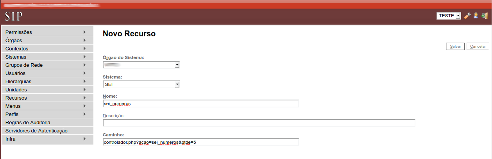
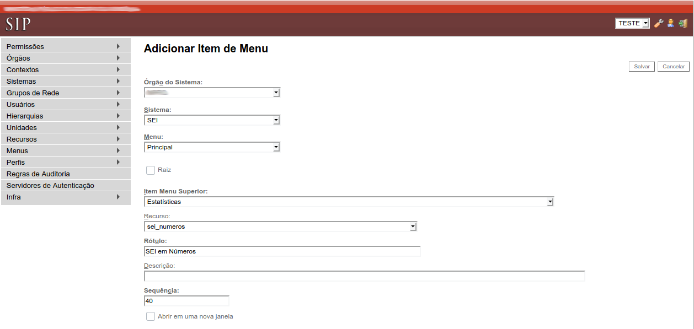
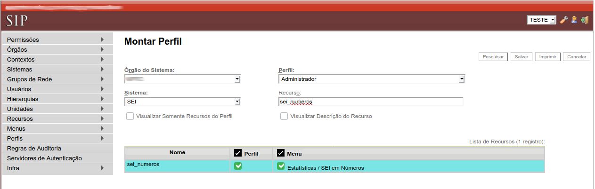

- Instalar Módulo
No arquivo "config/ConfiguracaoSEI.php", adicione o módulo:
'Modulos' => array( 'MdNumerosIntegracao' => 'mod-numeros-sei' ),
- Configuração no SIP
Para adicionar o item de Menu, acesse o SIP e realize a seguinte configuração:
1 - Recursos - Novo
Nome: sei_numeros
Caminho: controlador.php?acao=sei_numeros&qtde=5
(a quantidade de itens na tela inicial pode ser ajustada alterando o valor "5" para o valor desejado)

2 - Menus - Montar - Novo Item
Item Menu Superior: Selecione Estatísticas
Recurso: Selecione sei_numeros
Rótulo: SEI em Números
Sequência: 40

3 - Perfis - Montar
Selecione o Órgão, Sistema e Perfil
Em Recurso digite sei_numeros e clique em Pesquisar
Marques a caixas de seleção em Perfil e Menu
